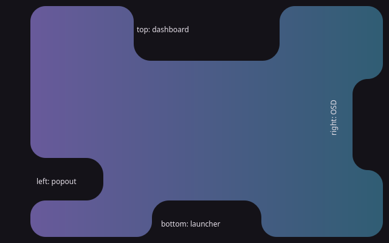

cae3Caelestia 3: The Frame and the Drawer System
This chapter builds the part that makes Caelestia Caelestia: one fullscreen window per monitor that draws the frame and holds every panel as a drawer that slides out of a frame edge. It's the most important chapter of the Caelestia rebuild. Once you understand it, every later module is just "a drawer with some content".

Rendered from the files in this chapter (Border.qml + PanelBg.qml): a frame with a 50 px left side for the bar, and drawers on all four edges melting into it.
The idea in one picture#
Files in this chapter:
modules/drawers/ Drawers Exclusions ContentWindow Border PanelBg Panels Interactions
components/ DrawerWrapperModule 1: One frame per monitor#
cae/modules/drawers/Drawers.qmlimport Quickshell
import QtQuick
// One frame window (plus the windows that reserve space) for every monitor.
Variants {
model: Quickshell.screens
Scope {
id: scope
required property ShellScreen modelData
Exclusions {
screen: scope.modelData
barZone: content.bar.exclusiveZone
}
ContentWindow {
id: content
screen: scope.modelData
}
}
}Variants creates one copy of its delegate per screen. Each copy is a Scope with two things: the Exclusions (which reserve space) and the ContentWindow (which draws everything).
Module 2: Reserving space without blocking anything#
The frame window covers the entire screen and ignores exclusive zones, otherwise it would push itself away. But tiled windows still need to stay inside the frame. Caelestia's trick: four extra, invisible, 1-pixel windows that do nothing but reserve space.
cae/modules/drawers/Exclusions.qmlimport Quickshell
import Quickshell.Wayland
import QtQuick
import qs.config
// The frame window itself ignores exclusive zones (it covers the whole screen). These four
// invisible 1px windows reserve space instead, so tiled windows sit inside the frame.
Scope {
id: root
required property ShellScreen screen
required property int barZone
Zone { anchors.left: true; exclusiveZone: root.barZone }
Zone { anchors.top: true }
Zone { anchors.right: true }
Zone { anchors.bottom: true }
component Zone: PanelWindow {
screen: root.screen
color: "transparent"
exclusiveZone: Config.border.thickness
mask: Region {}
implicitWidth: 1
implicitHeight: 1
WlrLayershell.namespace: "cae-border-exclusion"
}
}Zone { anchors.left: true; exclusiveZone: root.barZone }
Zone { anchors.top: true }
Zone { anchors.right: true }
Zone { anchors.bottom: true }Each Zone is anchored to one edge only. The left one reserves the bar's width (it changes when the bar hides), the others reserve the frame thickness.
component Zone: PanelWindow {
screen: root.screen
color: "transparent"
exclusiveZone: Config.border.thickness
mask: Region {}
implicitWidth: 1
implicitHeight: 1
WlrLayershell.namespace: "cae-border-exclusion"
}1×1 pixel, transparent, with an empty input mask (Region {}), so it can never be seen or clicked. Its only job is exclusiveZone: Hyprland keeps tiled windows that many pixels away from that edge.
modules/drawers/Exclusions.qml does exactly this. It's a good example of a trick worth stealing: separating "what reserves space" from "what draws".
Module 3: The frame shape#
cae/modules/drawers/Border.qmlimport QtQuick
import QtQuick.Shapes
// The frame around the screen: the whole window minus a rounded "hole".
// The left side is as wide as the bar, so the bar sits inside the frame.
Shape {
id: root
property real thickness: 10
property real leftThickness: 50 // = bar width
property real rounding: 25
property color colour: "black"
anchors.fill: parent
preferredRendererType: Shape.CurveRenderer
ShapePath {
fillColor: root.colour
strokeWidth: -1
fillRule: ShapePath.OddEvenFill // the inner rectangle cuts a hole in the outer one
PathRectangle { x: 0; y: 0; width: root.width; height: root.height }
PathRectangle {
x: root.leftThickness
y: root.thickness
width: root.width - root.leftThickness - root.thickness
height: root.height - root.thickness * 2
radius: root.rounding
}
}
}ShapePath {
fillColor: root.colour
strokeWidth: -1
fillRule: ShapePath.OddEvenFill // the inner rectangle cuts a hole in the outer one
PathRectangle { x: 0; y: 0; width: root.width; height: root.height }A ShapePath with OddEvenFill fills areas covered an odd number of times. Two rectangles are drawn: the full window, and an inner rounded rectangle. The middle is covered twice (even), so it stays empty. The strip between them is covered once and gets filled: that's the frame.
PathRectangle {
x: root.leftThickness
y: root.thickness
width: root.width - root.leftThickness - root.thickness
height: root.height - root.thickness * 2
radius: root.rounding
}The hole starts leftThickness from the left (the bar's width) and thickness from the other edges, with rounded corners. PathRectangle needs Qt 6.8 or newer.
Module 4: Drawer backgrounds that melt into the frame#
A plain rounded rectangle next to the frame would look glued on. Caelestia's panels instead flow out of the frame with concave curves where they meet it. The rebuild draws that with one path per drawer:
cae/modules/drawers/PanelBg.qmlimport QtQuick
import QtQuick.Shapes
// The surface behind one drawer: a rounded panel glued to a screen edge, with two concave
// "ears" where it meets the frame, so frame and drawer read as one continuous shape.
// It follows the drawer's wrapper item, so it grows as the drawer slides out.
Shape {
id: root
required property Item panel // the drawer wrapper (its size = the visible part)
property string edge: "top" // which frame edge the drawer comes out of
property real offsetX: 0 // where `panel`'s parent sits inside the window
property real offsetY: 0
property real radius: 28 // corners of the panel body
property real earRadius: 25 // the concave joints (match the frame rounding)
property color colour: "black"
readonly property bool horizontal: edge === "top" || edge === "bottom"
readonly property real along: horizontal ? panel.width : panel.height
readonly property real depth: horizontal ? panel.height : panel.width
readonly property real r: Math.max(0, Math.min(earRadius, depth / 2))
readonly property real cr: Math.max(0, Math.min(radius, depth - r, along / 2))
// Mirrored edges (bottom, left) draw the same path reflected, which reverses arc direction.
readonly property bool mirrored: edge === "bottom" || edge === "left"
readonly property int concave: mirrored ? PathArc.Counterclockwise : PathArc.Clockwise
readonly property int convex: mirrored ? PathArc.Clockwise : PathArc.Counterclockwise
// canonical coordinates: u runs along the edge (0 .. along + 2r), v goes into the screen (0 .. depth)
function px(u: real, v: real): real {
return edge === "left" ? v : edge === "right" ? width - v : u;
}
function py(u: real, v: real): real {
return edge === "top" ? v : edge === "bottom" ? height - v : u;
}
visible: depth > 0.5 && along > 0
preferredRendererType: Shape.CurveRenderer
x: offsetX + panel.x - (edge === "left" || edge === "right" ? 0 : r)
y: offsetY + panel.y - (horizontal ? 0 : r)
width: horizontal ? along + 2 * r : depth
height: horizontal ? depth : along + 2 * r
ShapePath {
fillColor: root.colour
strokeWidth: -1
startX: root.px(0, 0)
startY: root.py(0, 0)
// left/top ear: from the frame edge, curving into the panel's side
PathArc { x: root.px(root.r, root.r); y: root.py(root.r, root.r); radiusX: root.r; radiusY: root.r; direction: root.concave }
PathLine { x: root.px(root.r, root.depth - root.cr); y: root.py(root.r, root.depth - root.cr) }
// rounded far corners of the panel body
PathArc { x: root.px(root.r + root.cr, root.depth); y: root.py(root.r + root.cr, root.depth); radiusX: root.cr; radiusY: root.cr; direction: root.convex }
PathLine { x: root.px(root.r + root.along - root.cr, root.depth); y: root.py(root.r + root.along - root.cr, root.depth) }
PathArc { x: root.px(root.r + root.along, root.depth - root.cr); y: root.py(root.r + root.along, root.depth - root.cr); radiusX: root.cr; radiusY: root.cr; direction: root.convex }
PathLine { x: root.px(root.r + root.along, root.r); y: root.py(root.r + root.along, root.r) }
// right/bottom ear back to the frame edge
PathArc { x: root.px(root.along + 2 * root.r, 0); y: root.py(root.along + 2 * root.r, 0); radiusX: root.r; radiusY: root.r; direction: root.concave }
PathLine { x: root.px(0, 0); y: root.py(0, 0) }
}
}required property Item panel // the drawer wrapper (its size = the visible part)
property string edge: "top" // which frame edge the drawer comes out of
property real offsetX: 0 // where `panel`'s parent sits inside the window
property real offsetY: 0
property real radius: 28 // corners of the panel body
property real earRadius: 25 // the concave joints (match the frame rounding)
property color colour: "black"panel is the drawer's wrapper item (Module 6). Its size is the visible part of the drawer, so the background grows as the drawer slides out. offsetX/offsetY say where the drawers' container sits inside the window (after the bar and the frame).
readonly property bool horizontal: edge === "top" || edge === "bottom"
readonly property real along: horizontal ? panel.width : panel.height
readonly property real depth: horizontal ? panel.height : panel.width
readonly property real r: Math.max(0, Math.min(earRadius, depth / 2))
readonly property real cr: Math.max(0, Math.min(radius, depth - r, along / 2))along is the panel's size parallel to the edge, depth how far it reaches into the screen. r (ear radius) and cr (corner radius) shrink when the panel is small, so a drawer that is just starting to open doesn't produce broken curves.
// Mirrored edges (bottom, left) draw the same path reflected, which reverses arc direction.
readonly property bool mirrored: edge === "bottom" || edge === "left"
readonly property int concave: mirrored ? PathArc.Counterclockwise : PathArc.Clockwise
readonly property int convex: mirrored ? PathArc.Clockwise : PathArc.CounterclockwiseA path drawn for the top edge can be reused for the other edges by mapping its coordinates. Mapping to the bottom or left edge is a reflection, and a reflection reverses which way an arc turns, so the clockwise/counter-clockwise directions swap for those edges.
// canonical coordinates: u runs along the edge (0 .. along + 2r), v goes into the screen (0 .. depth)
function px(u: real, v: real): real {
return edge === "left" ? v : edge === "right" ? width - v : u;
}
function py(u: real, v: real): real {
return edge === "top" ? v : edge === "bottom" ? height - v : u;
}The path is written once in "edge coordinates": u along the edge and v into the screen. px()/py() turn (u, v) into real x/y for the chosen edge. For the right edge, v is measured from the right side (width - v); for the bottom, from the bottom.
x: offsetX + panel.x - (edge === "left" || edge === "right" ? 0 : r)
y: offsetY + panel.y - (horizontal ? 0 : r)
width: horizontal ? along + 2 * r : depth
height: horizontal ? depth : along + 2 * rThe shape is wider than the panel by one ear radius on each side, because the ears stick out past the panel's sides.
// left/top ear: from the frame edge, curving into the panel's side
PathArc { x: root.px(root.r, root.r); y: root.py(root.r, root.r); radiusX: root.r; radiusY: root.r; direction: root.concave }
PathLine { x: root.px(root.r, root.depth - root.cr); y: root.py(root.r, root.depth - root.cr) }
// rounded far corners of the panel body
PathArc { x: root.px(root.r + root.cr, root.depth); y: root.py(root.r + root.cr, root.depth); radiusX: root.cr; radiusY: root.cr; direction: root.convex }
PathLine { x: root.px(root.r + root.along - root.cr, root.depth); y: root.py(root.r + root.along - root.cr, root.depth) }
PathArc { x: root.px(root.r + root.along, root.depth - root.cr); y: root.py(root.r + root.along, root.depth - root.cr); radiusX: root.cr; radiusY: root.cr; direction: root.convex }
PathLine { x: root.px(root.r + root.along, root.r); y: root.py(root.r + root.along, root.r) }
// right/bottom ear back to the frame edge
PathArc { x: root.px(root.along + 2 * root.r, 0); y: root.py(root.along + 2 * root.r, 0); radiusX: root.r; radiusY: root.r; direction: root.concave }
PathLine { x: root.px(0, 0); y: root.py(0, 0) }Start on the frame edge, curve concavely into the panel's side (the ear), go down the side, round the far corner, cross the far side, round the other corner, come back up, and curve out into the frame again.
Caelestia draws the frame and all panels with its Blobs plugin (plugin/src/Caelestia/Blobs/): each shape is a signed distance field, and the GPU smoothly blends nearby shapes. That gives the same melted joints, plus a slight stretch ("deform") while panels move. The rebuild gets the look with QML Shapes and no C++.
Module 5: The frame window#
cae/modules/drawers/ContentWindow.qmlimport Quickshell
import Quickshell.Wayland
import Quickshell.Hyprland
import QtQuick
import QtQuick.Effects
import qs.config
import qs.services
import qs.components
import qs.modules.bar
// The heart of the shell: one transparent, fullscreen window per monitor that draws the frame
// and contains the bar and every drawer. Only the frame and the open drawers take input.
PanelWindow {
id: root
readonly property ScreenState screenState: ScreenState {}
readonly property alias bar: barWrapper
readonly property real thickness: Config.border.thickness
color: "transparent"
anchors { top: true; bottom: true; left: true; right: true }
exclusionMode: ExclusionMode.Ignore
WlrLayershell.layer: WlrLayer.Top
WlrLayershell.namespace: "cae-drawers"
WlrLayershell.keyboardFocus: screenState.launcher || screenState.session ? WlrKeyboardFocus.OnDemand : WlrKeyboardFocus.None
Component.onCompleted: Visibilities.register(screen, screenState)
// Input only where something is drawn: the four frame strips and each drawer.
mask: Region {
Region { width: barWrapper.implicitWidth; height: root.height }
Region { width: root.width; height: root.thickness }
Region { x: root.width - root.thickness; width: root.thickness; height: root.height }
Region { y: root.height - root.thickness; width: root.width; height: root.thickness }
Region { item: drawerPanels.dashboard }
Region { item: drawerPanels.launcher }
Region { item: drawerPanels.notifications }
Region { item: drawerPanels.sidebar }
Region { item: drawerPanels.session }
Region { item: drawerPanels.osd }
Region { item: drawerPanels.utilities }
Region { item: drawerPanels.popouts }
}
// Clicking outside an open launcher, session menu or sidebar closes it.
HyprlandFocusGrab {
windows: [root]
active: root.screenState.launcher || root.screenState.session || root.screenState.sidebar
onCleared: {
root.screenState.launcher = false;
root.screenState.session = false;
root.screenState.sidebar = false;
}
}
// Dim the screen behind the session menu.
StyledRect {
anchors.fill: parent
color: Colours.palette.m3scrim
opacity: root.screenState.session ? 0.4 : 0
Behavior on opacity {
Anim { type: Anim.Effects }
}
}
// All surfaces are drawn opaque inside one layer, then the whole layer gets the surface
// alpha and one shared shadow. Overlapping shapes therefore never look darker.
Item {
anchors.fill: parent
opacity: Colours.surface.a
layer.enabled: true
layer.effect: MultiEffect {
shadowEnabled: true
blurMax: 15
shadowColor: Qt.alpha(Colours.palette.m3shadow, 0.7)
}
Border {
thickness: root.thickness
leftThickness: barWrapper.implicitWidth
rounding: Config.border.rounding
colour: Qt.alpha(Colours.surface, 1)
}
Bg { panel: drawerPanels.dashboard; edge: "top" }
Bg { panel: drawerPanels.launcher; edge: "bottom" }
Bg { panel: drawerPanels.notifications; edge: "top" }
Bg { panel: drawerPanels.sidebar; edge: "right" }
Bg { panel: drawerPanels.session; edge: "right" }
Bg { panel: drawerPanels.osd; edge: "right" }
Bg { panel: drawerPanels.utilities; edge: "bottom" }
Bg { panel: drawerPanels.popouts; edge: "left" }
}
Interactions {
id: interactions
anchors.fill: parent
screenState: root.screenState
panels: drawerPanels
bar: barWrapper
Panels {
id: drawerPanels
anchors.fill: parent
anchors.margins: root.thickness
anchors.leftMargin: barWrapper.implicitWidth
screen: root.screen
screenState: root.screenState
}
BarWrapper {
id: barWrapper
anchors.top: parent.top
anchors.bottom: parent.bottom
screen: root.screen
screenState: root.screenState
popouts: drawerPanels.popouts
}
}
component Bg: PanelBg {
offsetX: barWrapper.implicitWidth
offsetY: root.thickness
radius: Tokens.rounding.extraLarge
earRadius: Config.border.rounding
colour: Qt.alpha(Colours.surface, 1)
}
}readonly property ScreenState screenState: ScreenState {}
readonly property alias bar: barWrapper
readonly property real thickness: Config.border.thicknessEach window owns a ScreenState (which drawers are open on this monitor) and exposes the bar so Drawers.qml can read its width for the exclusions.
color: "transparent"
anchors { top: true; bottom: true; left: true; right: true }
exclusionMode: ExclusionMode.Ignore
WlrLayershell.layer: WlrLayer.Top
WlrLayershell.namespace: "cae-drawers"
WlrLayershell.keyboardFocus: screenState.launcher || screenState.session ? WlrKeyboardFocus.OnDemand : WlrKeyboardFocus.NoneAnchored to all four edges = fullscreen. ExclusionMode.Ignore because the Exclusions windows reserve the space. The namespace lets Hyprland blur it (with transparency on). Keyboard focus is only requested while the launcher or session menu is open, so normally your apps keep the keyboard.
Component.onCompleted: Visibilities.register(screen, screenState)Keybinds find this screen's state through Visibilities.
// Input only where something is drawn: the four frame strips and each drawer.
mask: Region {
Region { width: barWrapper.implicitWidth; height: root.height }
Region { width: root.width; height: root.thickness }
Region { x: root.width - root.thickness; width: root.thickness; height: root.height }
Region { y: root.height - root.thickness; width: root.width; height: root.thickness }
Region { item: drawerPanels.dashboard }
Region { item: drawerPanels.launcher }
Region { item: drawerPanels.notifications }
Region { item: drawerPanels.sidebar }
Region { item: drawerPanels.session }
Region { item: drawerPanels.osd }
Region { item: drawerPanels.utilities }
Region { item: drawerPanels.popouts }
}This is what makes a fullscreen window harmless. The mask is the union of the four frame strips and every drawer's wrapper. Anything outside it (the middle of your screen) lets clicks and scrolls fall through to the windows below. A closed drawer's wrapper has zero depth, so it adds nothing.
// Clicking outside an open launcher, session menu or sidebar closes it.
HyprlandFocusGrab {
windows: [root]
active: root.screenState.launcher || root.screenState.session || root.screenState.sidebar
onCleared: {
root.screenState.launcher = false;
root.screenState.session = false;
root.screenState.sidebar = false;
}
}HyprlandFocusGrab watches for clicks outside this window. While the launcher, session menu or sidebar is open, clicking anywhere else clears the grab, and onCleared closes them.
// Dim the screen behind the session menu.
StyledRect {
anchors.fill: parent
color: Colours.palette.m3scrim
opacity: root.screenState.session ? 0.4 : 0
Behavior on opacity {
Anim { type: Anim.Effects }
}
}A dark overlay fades in behind the session menu so it feels modal. It isn't in the mask, so it can't block anything.
// All surfaces are drawn opaque inside one layer, then the whole layer gets the surface
// alpha and one shared shadow. Overlapping shapes therefore never look darker.
Item {
anchors.fill: parent
opacity: Colours.surface.a
layer.enabled: true
layer.effect: MultiEffect {
shadowEnabled: true
blurMax: 15
shadowColor: Qt.alpha(Colours.palette.m3shadow, 0.7)
}The frame and all drawer backgrounds are drawn inside one layer. They're drawn fully opaque, and the layer as a whole gets the surface opacity. If each shape were transparent on its own, the places where they overlap (the ears over the frame) would look darker. The layer also gets one shared shadow, so the frame and its drawers cast a single soft shadow onto your wallpaper and windows.
Border {
thickness: root.thickness
leftThickness: barWrapper.implicitWidth
rounding: Config.border.rounding
colour: Qt.alpha(Colours.surface, 1)
}
Bg { panel: drawerPanels.dashboard; edge: "top" }
Bg { panel: drawerPanels.launcher; edge: "bottom" }
Bg { panel: drawerPanels.notifications; edge: "top" }
Bg { panel: drawerPanels.sidebar; edge: "right" }
Bg { panel: drawerPanels.session; edge: "right" }
Bg { panel: drawerPanels.osd; edge: "right" }
Bg { panel: drawerPanels.utilities; edge: "bottom" }
Bg { panel: drawerPanels.popouts; edge: "left" }The frame's left side is always exactly the bar's width (it animates when the bar hides). Each Bg follows one drawer and attaches to its edge.
Interactions {
id: interactions
anchors.fill: parent
screenState: root.screenState
panels: drawerPanels
bar: barWrapper
Panels {
id: drawerPanels
anchors.fill: parent
anchors.margins: root.thickness
anchors.leftMargin: barWrapper.implicitWidth
screen: root.screen
screenState: root.screenState
}
BarWrapper {
id: barWrapper
anchors.top: parent.top
anchors.bottom: parent.bottom
screen: root.screen
screenState: root.screenState
popouts: drawerPanels.popouts
}
}Interactions (hover zones) fills the window and contains the drawers (Panels, inset by the frame) and the bar (BarWrapper, on the left). Being children of Interactions means hover over any of them is reported to it.
component Bg: PanelBg {
offsetX: barWrapper.implicitWidth
offsetY: root.thickness
radius: Tokens.rounding.extraLarge
earRadius: Config.border.rounding
colour: Qt.alpha(Colours.surface, 1)
}An inline component with the shared settings, so each Bg line above only says which drawer and which edge.
Module 6: The drawer pattern#
Every Caelestia drawer uses the same trick. The drawer's wrapper grows from 0 to the content's size along the slide direction and clips its content, which stays glued to the far side. As the wrapper grows, the content appears to slide out from behind the frame.
cae/components/DrawerWrapper.qmlimport QtQuick
// The pattern behind every Caelestia drawer. The wrapper's size along the slide direction
// grows from 0 to the content's size as `offsetScale` goes 1 -> 0, and it clips, so the
// content appears to slide out from behind the frame edge.
Item {
id: root
property bool open: false
property string edge: "top" // the frame edge it comes out of
property real offsetScale: open ? 0 : 1
default property alias content: holder.data
readonly property Item contentItem: holder.children.length > 0 ? holder.children[0] : null
readonly property bool horizontal: edge === "top" || edge === "bottom"
readonly property real contentWidth: contentItem?.implicitWidth ?? 0
readonly property real contentHeight: contentItem?.implicitHeight ?? 0
implicitWidth: horizontal ? contentWidth : contentWidth * (1 - offsetScale)
implicitHeight: horizontal ? contentHeight * (1 - offsetScale) : contentHeight
visible: offsetScale < 1
clip: true
Behavior on offsetScale {
Anim { type: root.open ? Anim.Spatial : Anim.Emphasized }
}
Item {
id: holder
width: root.contentWidth
height: root.contentHeight
// keep the content glued to the side away from the edge, so it slides in
x: root.edge === "left" ? root.width - width : 0
y: root.edge === "top" ? root.height - height : 0
opacity: 1 - root.offsetScale * 0.6
}
}property bool open: false
property string edge: "top" // the frame edge it comes out of
property real offsetScale: open ? 0 : 1
default property alias content: holder.dataoffsetScale is the drawer's "closedness": 0 = open, 1 = closed. It follows open through a Behavior, so setting open is all a module ever does. The content goes in as a child (default property alias).
readonly property Item contentItem: holder.children.length > 0 ? holder.children[0] : null
readonly property bool horizontal: edge === "top" || edge === "bottom"
readonly property real contentWidth: contentItem?.implicitWidth ?? 0
readonly property real contentHeight: contentItem?.implicitHeight ?? 0The wrapper reads the first child's implicit size. Content therefore only has to say how big it wants to be.
implicitWidth: horizontal ? contentWidth : contentWidth * (1 - offsetScale)
implicitHeight: horizontal ? contentHeight * (1 - offsetScale) : contentHeight
visible: offsetScale < 1
clip: trueOnly the dimension that crosses the edge grows: height for top/bottom drawers, width for left/right ones. clip: true hides the part of the content that hasn't come out yet. When fully closed the wrapper is invisible, so it costs nothing to draw.
Behavior on offsetScale {
Anim { type: root.open ? Anim.Spatial : Anim.Emphasized }
}Opening uses the springy Spatial curve; closing uses Emphasized, which accelerates away. Different motion for entering and leaving is a Material 3 rule that Caelestia follows.
Item {
id: holder
width: root.contentWidth
height: root.contentHeight
// keep the content glued to the side away from the edge, so it slides in
x: root.edge === "left" ? root.width - width : 0
y: root.edge === "top" ? root.height - height : 0
opacity: 1 - root.offsetScale * 0.6
}For a top drawer the content's bottom is aligned to the wrapper's bottom (y = height - contentHeight, negative while opening), so the bottom of the panel appears first, as if it were pushed down out of the frame. Left drawers align to the right side; right and bottom drawers need no offset. The content also fades in slightly.
Each module has a Wrapper.qml (for example modules/dashboard/Wrapper.qml) with an offsetScale property, Behavior on offsetScale { Anim {} }, and a negative anchor margin of -implicitHeight * offsetScale. The OSD and session wrappers use the "grow and clip" form shown here. The rebuild uses one shared component for all of them.
Module 7: Where each drawer lives#
cae/modules/drawers/Panels.qmlimport Quickshell
import QtQuick
import qs.config
import qs.services
import qs.components
import qs.modules.dashboard as Dashboard
import qs.modules.launcher as Launcher
import qs.modules.notifications as Notifications
import qs.modules.sidebar as Sidebar
import qs.modules.session as Session
import qs.modules.osd as Osd
import qs.modules.utilities as Utilities
import qs.modules.popouts as Popouts
// Where every drawer lives inside the frame. Each one is a DrawerWrapper attached to an edge.
Item {
id: root
required property ShellScreen screen
required property ScreenState screenState
readonly property alias dashboard: dashboard
readonly property alias launcher: launcher
readonly property alias notifications: notifications
readonly property alias sidebar: sidebar
readonly property alias session: session
readonly property alias osd: osd
readonly property alias utilities: utilities
readonly property alias popouts: popouts
DrawerWrapper {
id: dashboard
edge: "top"
open: root.screenState.dashboard
anchors.top: parent.top
anchors.horizontalCenter: parent.horizontalCenter
Dashboard.Content { screenState: root.screenState; shown: dashboard.visible }
}
DrawerWrapper {
id: launcher
edge: "bottom"
open: root.screenState.launcher
anchors.bottom: parent.bottom
anchors.horizontalCenter: parent.horizontalCenter
Launcher.Content { screenState: root.screenState }
}
DrawerWrapper {
id: notifications
edge: "top"
open: Notifs.popups.length > 0 && !root.screenState.sidebar
anchors.top: parent.top
anchors.right: parent.right
Notifications.Content {}
}
DrawerWrapper {
id: sidebar
edge: "right"
open: root.screenState.sidebar
anchors.top: parent.top
anchors.right: parent.right
Sidebar.Content { maxHeight: root.height - Tokens.sizes.sessionButton * 3 }
}
DrawerWrapper {
id: session
edge: "right"
open: root.screenState.session
anchors.verticalCenter: parent.verticalCenter
anchors.right: parent.right
Session.Content { screenState: root.screenState }
}
DrawerWrapper {
id: osd
edge: "right"
open: root.screenState.osd
anchors.verticalCenter: parent.verticalCenter
anchors.right: parent.right
anchors.rightMargin: session.width // moves aside when the session menu is open
Osd.Content { screenState: root.screenState; screen: root.screen }
}
DrawerWrapper {
id: utilities
edge: "bottom"
open: root.screenState.utilities
anchors.bottom: parent.bottom
anchors.right: parent.right
Utilities.Content {}
}
Popouts.Wrapper {
id: popouts
// vertically centred on the hovered bar item, but kept inside the screen
y: Math.max(0, Math.min(root.height - height, currentCenter - Config.border.thickness - height / 2))
Behavior on y {
enabled: popouts.visible
Anim { type: Anim.FastSpatial }
}
}
}The container is inset by the frame (and by the bar on the left), so anchors.top: parent.top means "touching the top frame edge". Each drawer is a DrawerWrapper whose open comes from the screen state, except two:
- notifications open by themselves whenever there are popups (and hide while the notification centre is open);
- popouts use their own wrapper (it also slides toward the hovered bar item, Caelestia 4: The Vertical Bar and Its Popouts).
The OSD's right margin equals the session drawer's width, so when the session menu slides out, the OSD moves aside instead of overlapping.
Module 8: Opening drawers by touching the frame#
cae/modules/drawers/Interactions.qmlimport QtQuick
import qs.config
import qs.components
import qs.modules.bar
// Opens drawers when the pointer touches a frame edge, like Caelestia: top edge = dashboard,
// right edge = OSD, top-right corner = sidebar, bottom-right corner = utilities,
// left edge = bar popouts. It only reacts when you ENTER or LEAVE a zone, so a drawer opened
// by a keybind stays open until you move into its zone and out again.
MouseArea {
id: root
required property ScreenState screenState
required property Panels panels
required property BarWrapper bar
property bool inDashboard: false
property bool inOsd: false
property bool inSidebar: false
property bool inUtilities: false
readonly property real t: Config.border.thickness
readonly property real r: Config.border.rounding
// x/y in window coordinates; panels sit at (bar width, thickness)
function withinX(p: Item, x: real): bool {
const px = bar.implicitWidth + p.x;
return x >= px - r && x <= px + p.width + r;
}
function withinY(p: Item, y: real): bool {
const py = t + p.y;
return y >= py - r && y <= py + p.height + r;
}
function update(x: real, y: real): void {
// bar popouts: hovering a bar item opens its popout; leaving bar and popout closes it
if (x < bar.implicitWidth)
bar.checkPopout(y);
else if (!(x < bar.implicitWidth + panels.popouts.width && withinY(panels.popouts, y)))
panels.popouts.hasCurrent = false;
// show a hidden bar while the pointer is at the left edge
bar.hovered = x < Math.max(bar.implicitWidth, t);
const dash = Config.dashboard.showOnHover && y < t + panels.dashboard.height && withinX(panels.dashboard, x);
if (dash !== inDashboard) { inDashboard = dash; screenState.dashboard = dash; }
const osd = x > width - t - panels.osd.width - panels.session.width && withinY(panels.osd, y) && !screenState.session;
if (osd !== inOsd) { inOsd = osd; screenState.osd = osd; }
const side = Config.sidebar.showOnHover && x > width - t - Math.max(r, panels.sidebar.width)
&& y < t + Math.max(r * 2, panels.sidebar.height);
if (side !== inSidebar) { inSidebar = side; screenState.sidebar = side; }
const utils = y > height - t - Math.max(r, panels.utilities.height) && x > width - t - panels.utilities.width - r;
if (utils !== inUtilities) { inUtilities = utils; screenState.utilities = utils; }
}
hoverEnabled: true
acceptedButtons: Qt.NoButton
onPositionChanged: event => update(event.x, event.y)
onExited: update(width / 2, height / 2) // pointer left the frame: close hover drawers
}MouseArea {
id: root
required property ScreenState screenState
required property Panels panels
required property BarWrapper bar
property bool inDashboard: false
property bool inOsd: false
property bool inSidebar: false
property bool inUtilities: falseacceptedButtons: Qt.NoButton means it never takes clicks (the bar and drawers inside it still do), but with hoverEnabled it receives every pointer move over the window. The four flags remember whether the pointer is currently inside each zone.
// x/y in window coordinates; panels sit at (bar width, thickness)
function withinX(p: Item, x: real): bool {
const px = bar.implicitWidth + p.x;
return x >= px - r && x <= px + p.width + r;
}
function withinY(p: Item, y: real): bool {
const py = t + p.y;
return y >= py - r && y <= py + p.height + r;
}A drawer's hover zone is its size plus the frame rounding on each side, so you don't have to hit it perfectly. Panel coordinates are relative to the drawers' container, so the bar width and frame thickness are added to get window coordinates.
function update(x: real, y: real): void {
// bar popouts: hovering a bar item opens its popout; leaving bar and popout closes it
if (x < bar.implicitWidth)
bar.checkPopout(y);
else if (!(x < bar.implicitWidth + panels.popouts.width && withinY(panels.popouts, y)))
panels.popouts.hasCurrent = false;Over the bar, ask the bar what's under the pointer (it opens the matching popout). Away from both the bar and the open popout, close it.
// show a hidden bar while the pointer is at the left edge
bar.hovered = x < Math.max(bar.implicitWidth, t);In non-persistent mode the bar is only as wide as the frame; touching the left edge marks it hovered and it slides out.
const dash = Config.dashboard.showOnHover && y < t + panels.dashboard.height && withinX(panels.dashboard, x);
if (dash !== inDashboard) { inDashboard = dash; screenState.dashboard = dash; }The dashboard zone is the top edge (plus the dashboard's own area once it's open). The state is only changed when you enter or leave the zone. A drawer opened with a keybind therefore stays open while you move around elsewhere, instead of being closed by the next mouse move.
const osd = x > width - t - panels.osd.width - panels.session.width && withinY(panels.osd, y) && !screenState.session;
if (osd !== inOsd) { inOsd = osd; screenState.osd = osd; }
const side = Config.sidebar.showOnHover && x > width - t - Math.max(r, panels.sidebar.width)
&& y < t + Math.max(r * 2, panels.sidebar.height);
if (side !== inSidebar) { inSidebar = side; screenState.sidebar = side; }
const utils = y > height - t - Math.max(r, panels.utilities.height) && x > width - t - panels.utilities.width - r;
if (utils !== inUtilities) { inUtilities = utils; screenState.utilities = utils; }OSD: the right edge in the middle (and not while the session menu is open). Sidebar: the top-right corner. Utilities: the bottom-right corner.
hoverEnabled: true
acceptedButtons: Qt.NoButton
onPositionChanged: event => update(event.x, event.y)
onExited: update(width / 2, height / 2) // pointer left the frame: close hover drawersMoving into the middle of the screen leaves the window (the mask ends there), so onExited runs the checks with a point outside every zone, and all hover-opened drawers close.
modules/drawers/Interactions.qml is about 330 lines because it also handles drag gestures (drag the bar out, swipe the session menu in, pull the launcher up on touchscreens), shortcut-vs-hover hand-over, and fullscreen windows. Regions.qml builds the input mask with Intersection.Xor and Subtract instead of a simple union.
Checkpoint#
With the files so far plus a temporary shell.qml that only contains Drawers {}, you get the frame on every monitor and empty drawers. Comment out the module imports in Panels.qml you haven't written yet, or download the full rebuild and read ahead.
Practice#
Set "border": { "thickness": 20, "rounding": 40 } in ~/.config/cae/shell.json and save. What changes, and why don't you need to restart?
✅ Solution
The frame, the reserved space, the drawers' inset and the ears all follow, because every one of them reads Config.border.*, and Config reloads the file on change.
Add a "notes" drawer on the left edge, below the middle, that opens with a keybind. Use DrawerWrapper { edge: "left" }, add a notes flag to ScreenState, a Bg line in ContentWindow, a mask Region and a shortcut.
💡 Hint
Five small edits: ScreenState, Panels (the wrapper + content), ContentWindow (Bg and mask), Shortcuts (a new GShortcut).
Opening the dashboard as soon as you touch the top edge can be annoying. Make it open only after the pointer stays in the zone for 200 ms.
✅ Solution
Instead of setting screenState.dashboard = dash immediately, start a Timer { id: dashDelay; interval: 200; onTriggered: root.screenState.dashboard = root.inDashboard } when entering, and close immediately when leaving:
if (dash !== inDashboard) {
inDashboard = dash;
if (dash) dashDelay.restart(); else { dashDelay.stop(); screenState.dashboard = false; }
}Caelestia lets you open the launcher by dragging up from the bottom edge. Implement it: accept the left button in Interactions, remember the press position, and open the launcher when the pointer moves 30 px up from a press on the bottom frame strip.
💡 Hint
acceptedButtons: Qt.LeftButton, onPressed: e => dragStart = Qt.point(e.x, e.y), then in onPositionChanged check pressed && dragStart.y > height - t - 5 && dragStart.y - e.y > 30. Make sure clicks still reach the bar (call mouse.accepted = false when the press isn't on the bottom strip).